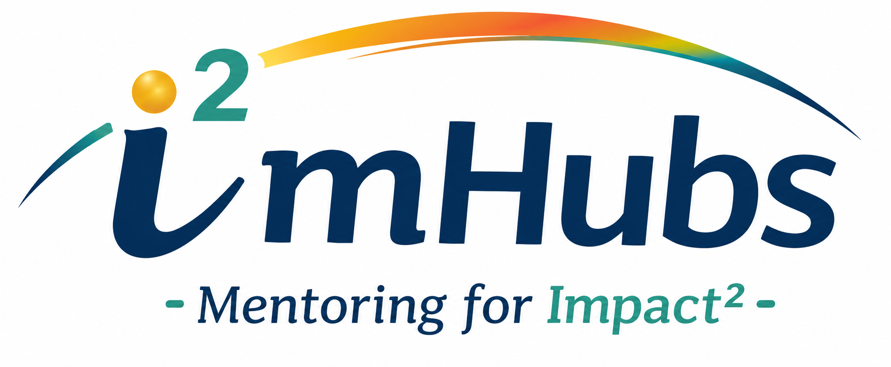

Module 1 of the i²mHubs Mentoring for Impact² Initiative
A self-paced learning experience designed to help graduate students understand the diversity of faculty careers, explore institutional missions, and reflect on how different academic pathways align with their interests, values, and professional goals.
Begin Module 1Many graduate students experience academia through a single institutional lens and may not realize the diversity of opportunities available across higher education. Module 1 introduces participants to faculty careers, institutional missions, academic career pathways, and common challenges encountered along the journey.
Explore institutional missions, faculty expectations, and the diverse pathways available across higher education.
Learn how faculty positions are advertised and how application materials are tailored to different institutions.
Explore strategies for overcoming common challenges, finding mentors, and building confidence for success.
Hear directly from faculty working across a variety of institutional types and career pathways.
Explore graphics, comparisons, examples, multimedia resources, and real-world perspectives designed to make academic careers more transparent.
Reflect on your interests, values, strengths, and goals while considering how different academic pathways align with your future.
Estimated Time: 3–5 Hours (Self-Paced)
Faculty perspectives are integrated throughout the learning experience to provide authentic insights into academic careers across a range of institutions and professional pathways.
i²mHubs supports participants from exploration through preparation and into the early years of an academic appointment.
Module 1
Academic Career Pathways
Module 2
Academic Career Workshop
Module 3
Mentoring Hubs
Participants who complete Module 1 will be eligible to apply for the iREDEFINE Workshop, an in-person experience focused on preparing for the academic job search process and transitioning into academic careers.
Prototype Website – Content and Design Under Development